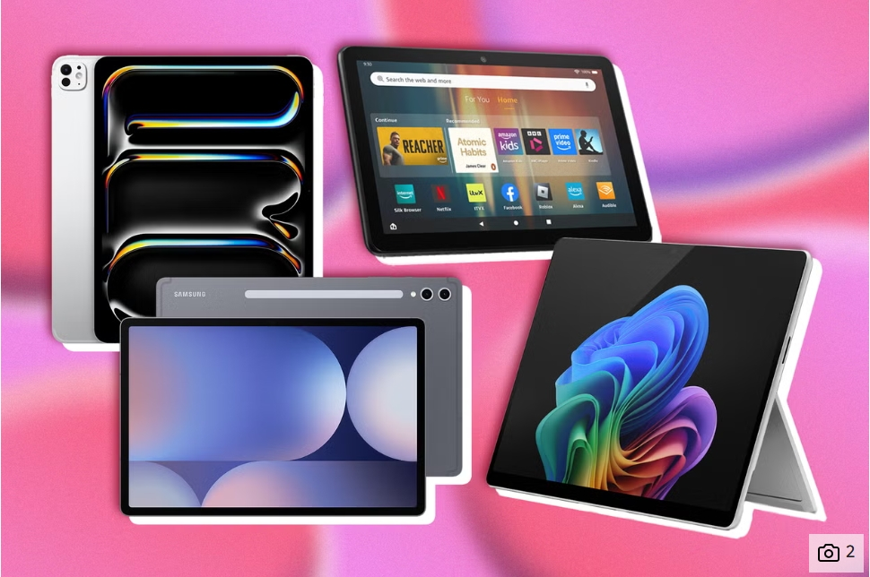

Un teléfono inteligente es un teléfono celular con una computadora integrada y otras funciones que originalmente
no estaban asociadas con los teléfonos, como un sistema operativo (OS), navegación web y la capacidad de
ejecutar aplicaciones de software.
Los teléfonos inteligentes son utilizados por los consumidores y forman parte de sus negocios o trabajo.
Proporcionan acceso a numerosas aplicaciones móviles y funciones informáticas, y se han convertido en parte
integral de la vida moderna.
Usos populares de los teléfonos inteligentes
Las formas más comunes de uso de los teléfonos inteligentes incluyen las siguientes:
Correo electrónico y mensajería. Se pueden instalar aplicaciones de correo electrónico y
mensajería en un smartphone, lo que permite a los usuarios recibir y enviar mensajes desde su teléfono.
Redes sociales. Muchos consumidores usan sus smartphones para interactuar con amigos,
familiares y marcas en redes sociales . Plataformas como Facebook, Instagram, Twitter y LinkedIn cuentan con
aplicaciones móviles que los usuarios descargan de la tienda de aplicaciones del teléfono. Estas aplicaciones
permiten publicar actualizaciones y fotos personales desde cualquier lugar.
Salud y bienestar. Otro uso común de los smartphones es el seguimiento de la salud y el
bienestar . Por ejemplo, la app Salud para iOS de Apple monitoriza el sueño, la nutrición, las medidas
corporales, las constantes vitales y los ejercicios de salud mental.
Conexión con otros dispositivos. Los dispositivos wearables de terceros , como los relojes
inteligentes, pueden conectarse con un smartphone para monitorizar las estadísticas de salud de una persona,
como la frecuencia cardíaca y los pasos dados, y enviar esa información para que se agregue al teléfono.
Pago móvil. Las funciones de billetera digital permiten a los usuarios guardar la
información de su tarjeta de crédito en sus teléfonos para realizar pagos móviles al comprar artículos.
Aplicaciones como Apple Pay también permiten pagar a otros usuarios de iOS directamente desde sus teléfonos. Los smartphones modernos integran inteligencia artificial y conectividad 5G.
Con la llegada de la inteligencia artificial, los smartphones actuales son capaces de
realizar tareas complejas, como reconocimiento facial, análisis de voz y fotografía computacional.
Además, la conectividad 5G ha permitido experiencias más rápidas y eficientes en la nube.
Se espera que en el futuro estos dispositivos integren aún más funciones de salud, realidad aumentada
y automatización personal, consolidándose como el centro del ecosistema digital del usuario.
Tablets: El Futuro de la Productividad Móvil
Publicado el —
por Kevin Alexis Landaverde Landaverde
Las **tablets** han evolucionado de ser simples dispositivos de consumo de contenido a convertirse en potentes herramientas de productividad. Equipadas con sistemas operativos avanzados como iPadOS y Android, y potenciadas por procesadores de alto rendimiento, hoy compiten directamente con los ordenadores portátiles ultraligeros.
Uso en Educación y Diseño
En el sector educativo, las tablets son invaluables para la toma de apuntes digital y el acceso a recursos interactivos. En el campo del **diseño gráfico y la ilustración**, la integración de lápices ópticos de alta precisión, como el Apple Pencil o el Samsung S Pen, ha redefinido el flujo de trabajo para muchos profesionales.

Las tablets modernas se han enfocado en la precisión del lápiz óptico y teclados desmontables para la productividad.
Tablets vs. Laptops: La Conexión 5G
Aunque aún no reemplazan completamente a una laptop para tareas de programación o edición de video intensiva, las tablets con **conectividad 5G** ofrecen una ventaja de movilidad inigualable. Permiten una conexión constante y ultrarrápida a la nube, vital para la colaboración y el trabajo remoto. La tendencia actual es hacia interfaces más robustas que gestionan la **multitarea** de manera eficiente, cerrando la brecha con los sistemas operativos de escritorio.
Guía 23a de TPI115 – Recursos y Materiales
Tablets: El Futuro de la Productividad Móvil
Publicado el —
por Kevin Alexis Landaverde Landaverde
Las **tablets** han evolucionado de ser simples dispositivos de consumo de contenido a convertirse en potentes herramientas de productividad. Equipadas con sistemas operativos avanzados como iPadOS y Android, y potenciadas por procesadores de alto rendimiento, hoy compiten directamente con los ordenadores portátiles ultraligeros.
Uso en Educación y Diseño
En el sector educativo, las tablets son invaluables para la toma de apuntes digital y el acceso a recursos interactivos. En el campo del **diseño gráfico y la ilustración**, la integración de lápices ópticos de alta precisión, como el Apple Pencil o el Samsung S Pen, ha redefinido el flujo de trabajo para muchos profesionales.
Las tablets modernas se han enfocado en la precisión del lápiz óptico y teclados desmontables para la productividad.
Tablets vs. Laptops: La Conexión 5G
Aunque aún no reemplazan completamente a una laptop para tareas de programación o edición de video intensiva, las tablets con **conectividad 5G** ofrecen una ventaja de movilidad inigualable. Permiten una conexión constante y ultrarrápida a la nube, vital para la colaboración y el trabajo remoto. La tendencia actual es hacia interfaces más robustas que gestionan la **multitarea** de manera eficiente, cerrando la brecha con los sistemas operativos de escritorio.
Smartwatch: La Evolución de la Tecnología en tu Muñeca
Publicado el
—
por Adonis Aquiles Aguilar Umaña
Los smartwatches han pasado de ser simples relojes digitales a convertirse en dispositivos inteligentes que complementan al smartphone y permiten monitorear la salud, gestionar notificaciones y realizar pagos móviles.
Equipados con sensores avanzados, estos relojes recopilan datos sobre la frecuencia cardíaca, el sueño, el oxígeno en sangre y la actividad física diaria.
Funciones Principales de un Smartwatch
Los relojes inteligentes ofrecen una amplia gama de funciones diseñadas para mejorar la vida cotidiana:
Monitoreo de salud. Miden la frecuencia cardíaca, los pasos, las calorías quemadas y hasta el nivel de estrés.
Conectividad. Se sincronizan con el teléfono mediante Bluetooth o Wi-Fi, permitiendo responder mensajes, atender llamadas y recibir notificaciones directamente en la muñeca.
Pagos digitales. Con tecnologías como NFC, los usuarios pueden realizar pagos sin contacto en tiendas compatibles.
Asistentes inteligentes. Integran asistentes de voz como Siri, Alexa o Google Assistant, facilitando tareas cotidianas con simples comandos.
Los smartwatches modernos combinan elegancia, rendimiento y funciones avanzadas de salud y conectividad.
El Futuro de los Smartwatches
La tendencia actual apunta hacia relojes inteligentes con mayor autonomía energética, sensores biométricos más precisos y una integración más profunda con el ecosistema de dispositivos del usuario.
Con el auge de la inteligencia artificial, los smartwatches del futuro podrán anticipar necesidades y ofrecer recomendaciones personalizadas para mejorar el bienestar y la productividad.
Análisis de Dispositivos Tecnológicos — Guía 23a TPI115
Este portal es el recurso oficial para la **Guía 23a de TPI115** (UES), enfocado en el análisis a profundidad de **dispositivos tecnológicos** (smartphones, IA) y su impacto en la **programación web**